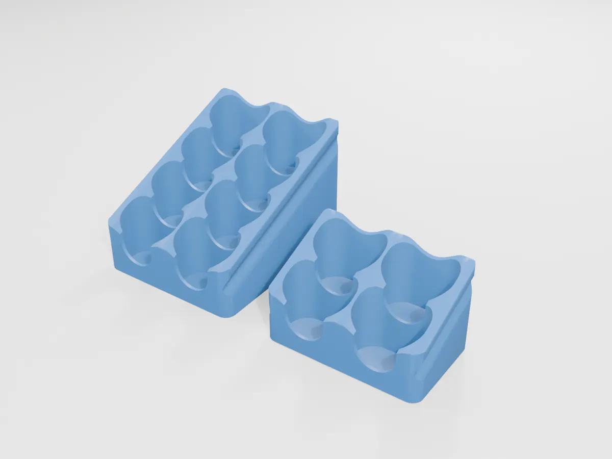
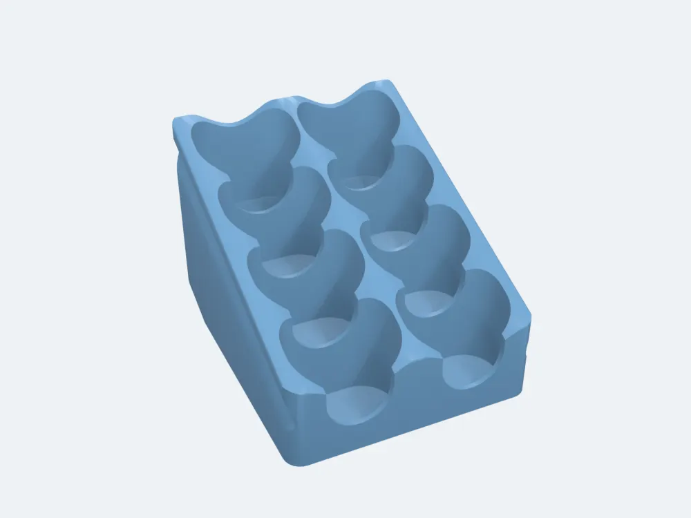
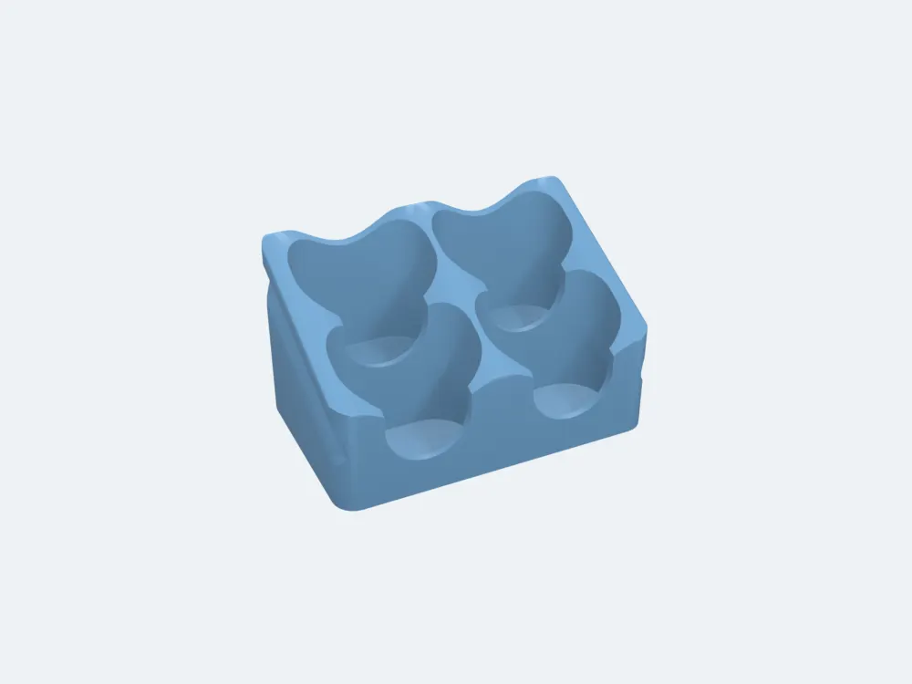

Problem
Acht kleine Sirupflaschen in der Kühlschranktür: Sie kippen um, rollen herum und man findet die richtige nicht.
Lösung
Ein Halter mit gestuften Fächern. Jede Flasche steht für sich, die hinteren stehen höher, so sieht man alle Etiketten auf einen Blick.
- 2 × 4 (117,2 × 144 × 99 mm) für die Kühlschranktür
- 2 × 2 (117,2 × 73,2 × 70 mm), z. B. neben die Kaffeemaschine
- Fach 51 × 33 mm für Flaschen mit ca. 50 × 32 mm Querschnitt, 0,5 mm Luft je Seite nach Passtest
- Fachböden als Treppe (2 × 4: 2 / 17 / 32 / 47 mm), Wellenrand und Taille zum leichten Greifen
- Ohne Stützen druckbar, passt auf den A1 mini
Druckeinstellungen
| 2 × 4 | 2 × 2 | |
|---|---|---|
| Drucker | Bambu Lab A1 mini, 0,4-mm-Düse, 0.20mm Standard | |
| Material | PETG, Textured PEI | |
| Schicht / Wände / Infill | 0,2 mm / 2 / 15 % | |
| Stützen / Brim | keine / 8 mm | |
| Druckzeit | ca. 8 h 20 min | ca. 3 h 42 min |
| Filament | ca. 202 g | ca. 84 g |
Zahlen aus den Druckdateien (Bambu Studio).
Short zum Teil

Bis zum Klick werden nur Vorschaubilder von dieser Seite gezeigt. Beim Antippen erscheint am Video ein Hinweis, erst „Video laden“ verbindet mit YouTube (Google, auch USA). Mehr dazu in der Datenschutzerklärung.
In 3D drehen
Ziehen zum Drehen, zwei Finger oder Mausrad zum Zoomen.
 echtes Modell aus der Konstruktion · lädt erst beim Antippen
echtes Modell aus der Konstruktion · lädt erst beim Antippen
Zwei Größen, ein Modell
Gleicher Maßstab: Schieber ziehen.


Druckbahnen Schicht für Schicht
Slice-Ansicht 2 × 4
Alle Druckbahnen aus der echten Druckdatei, farbig nach Art. Mit dem Schichtregler sieht man, wie das Teil Schicht für Schicht entsteht. 495 Schichten, 8 h 20 min laut Druckdatei.
Slice-Ansicht 2 × 2
Alle Druckbahnen aus der echten Druckdatei, farbig nach Art. Mit dem Schichtregler sieht man, wie das Teil Schicht für Schicht entsteht. 345 Schichten, 3 h 42 min laut Druckdatei.